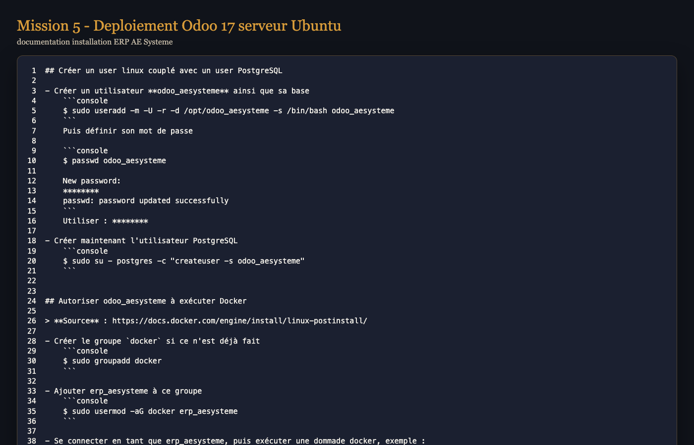
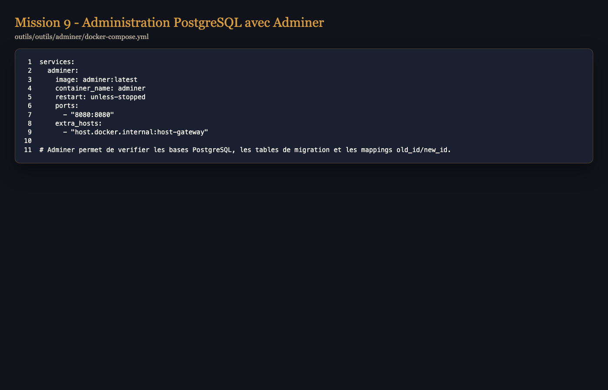

Contexte et acteurs
Dans le cadre de mon alternance chez AESysteme, entreprise de solutions de courant faible et de réseaux informatiques, j’ai mis en place un environnement Odoo 17 sur un serveur Ubuntu. Les acteurs concernés sont l’entreprise, les utilisateurs d’Odoo et moi-même pour la mise en œuvre technique.
Expression du besoin
Disposer d’un environnement Odoo accessible à distance, relié à PostgreSQL et administrable, avec un accès web en HTTPS.
Solution retenue et justification
La solution associe Ubuntu, Docker pour exécuter Odoo, PostgreSQL pour les données, Adminer pour leur administration et Apache en reverse proxy. La séparation des composants facilite la configuration et la maintenance ; HTTPS protège les échanges web. Ce choix ne remplace pas une politique de sauvegarde ni la restriction des accès d’administration.
Étapes de mise en œuvre
- Préparation de l’environnement serveur Ubuntu.
- Configuration du déploiement Odoo avec Docker et de sa connexion à PostgreSQL.
- Mise à disposition d’Adminer pour l’administration de la base.
- Configuration du reverse proxy Apache et du certificat HTTPS.
- Documentation du déploiement, présentée ci-dessous.
Tests et résultat obtenu
Après le déploiement, j’ai ouvert le site Odoo en HTTPS et me suis connecté à l’application. L’accès au site et la connexion fonctionnaient.
Ce contrôle valide l’accès web et l’utilisation de l’application au moment du test. Aucun résultat de test de persistance après redémarrage n’est présenté ici. Les preuves ci-dessous documentent le déploiement ; elles ne constituent pas un compte rendu de ce test.
Compétences mobilisées
- Gérer le patrimoine informatique : identifier les composants et documenter l’environnement.
- Mettre à disposition des utilisateurs un service informatique : déployer et accompagner la mise en service.
- Travailler en mode projet : organiser les étapes de déploiement.
Bilan personnel
Cette mission m’a permis de relier l’application, la base de données et le point d’accès web. Pour rendre le déploiement plus facilement reproductible, je dois conserver la procédure, les versions et les résultats des tests, sans publier les secrets de configuration.
Déroulement technique détaillé
La procédure de travail commence par la préparation d’Ubuntu et l’installation d’Apache. Elle prévoit l’ouverture des accès web dans le pare-feu, puis la configuration du certificat avec Certbot. Le navigateur sert ensuite à vérifier le point d’entrée web.
PostgreSQL et son client sont installés séparément du conteneur Odoo. La procédure prévoit le démarrage du service et son activation au démarrage du système, puis la préparation du rôle applicatif utilisé par Odoo.
Le déploiement utilise Docker Compose avec l’image Odoo 17. Les répertoires de configuration et de modules personnalisés sont montés dans le conteneur ; les données Odoo disposent d’un volume persistant. Cette organisation sépare les fichiers de l’application et les données à conserver.
La configuration Odoo précise les chemins des modules et des données ainsi que les paramètres de connexion PostgreSQL. Les échanges entre le réseau Docker et la base hébergée sur le serveur nécessitent des règles réseau adaptées. Les secrets ne sont pas reproduits dans le portfolio.
Apache reçoit les requêtes destinées au nom de domaine et les transmet à Odoo par un virtual host utilisant ProxyPass et ProxyPassReverse. La procédure prévoit l’activation du site puis le certificat HTTPS.
Enfin, la documentation couvre le lancement avec Compose, l’identification du conteneur actif et sa gestion. Mon contrôle confirmé porte sur l’ouverture du site en HTTPS et la connexion à Odoo ; je ne présente pas le redémarrage ou le renouvellement du certificat comme des tests personnellement confirmés.
Recul sur la procédure
Les documents d’installation contiennent des exemples hérités et quelques incohérences de noms de comptes ou de commandes. Ils servent à expliquer l’architecture et le déroulement, pas à publier une procédure prête à exécuter sans relecture. Les droits des fichiers, les privilèges PostgreSQL et les ports exposés doivent être revus selon le principe du moindre privilège.
Preuves

